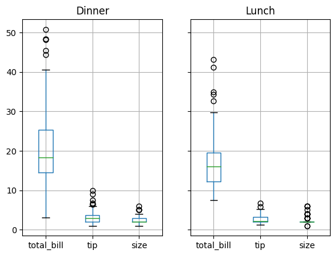

データのグルーピング¶
GroupByオブジェクト¶
[1]:
import pandas as pd
tips = pd.read_csv(
"https://raw.githubusercontent.com/plotly/datasets/master/tips.csv",
dtype={
"sex": "category",
"smoker": "category",
"day": "category",
"time": "category",
},
)
tips.head()
[1]:
| total_bill | tip | sex | smoker | day | time | size | |
|---|---|---|---|---|---|---|---|
| 0 | 16.99 | 1.01 | Female | No | Sun | Dinner | 2 |
| 1 | 10.34 | 1.66 | Male | No | Sun | Dinner | 3 |
| 2 | 21.01 | 3.50 | Male | No | Sun | Dinner | 3 |
| 3 | 23.68 | 3.31 | Male | No | Sun | Dinner | 2 |
| 4 | 24.59 | 3.61 | Female | No | Sun | Dinner | 4 |
[2]:
tips_groupby_time = tips.groupby("time")
type(tips_groupby_time)
[2]:
pandas.core.groupby.generic.DataFrameGroupBy
[3]:
total_bill_groupby_time = tips.loc[:, "total_bill"].groupby(
tips.loc[:, "time"]
)
type(total_bill_groupby_time)
[3]:
pandas.core.groupby.generic.SeriesGroupBy
[4]:
tips.groupby(["day", "time"])
[4]:
<pandas.core.groupby.generic.DataFrameGroupBy object at 0x7f016fdedc90>
[5]:
tips_groupby_time.get_group("Dinner").head()
[5]:
| total_bill | tip | sex | smoker | day | time | size | |
|---|---|---|---|---|---|---|---|
| 0 | 16.99 | 1.01 | Female | No | Sun | Dinner | 2 |
| 1 | 10.34 | 1.66 | Male | No | Sun | Dinner | 3 |
| 2 | 21.01 | 3.50 | Male | No | Sun | Dinner | 3 |
| 3 | 23.68 | 3.31 | Male | No | Sun | Dinner | 2 |
| 4 | 24.59 | 3.61 | Female | No | Sun | Dinner | 4 |
[6]:
tips_groupby_time.head(2)
[6]:
| total_bill | tip | sex | smoker | day | time | size | |
|---|---|---|---|---|---|---|---|
| 0 | 16.99 | 1.01 | Female | No | Sun | Dinner | 2 |
| 1 | 10.34 | 1.66 | Male | No | Sun | Dinner | 3 |
| 77 | 27.20 | 4.00 | Male | No | Thur | Lunch | 4 |
| 78 | 22.76 | 3.00 | Male | No | Thur | Lunch | 2 |
[7]:
tips_groupby_time.tail(2)
[7]:
| total_bill | tip | sex | smoker | day | time | size | |
|---|---|---|---|---|---|---|---|
| 225 | 16.27 | 2.50 | Female | Yes | Fri | Lunch | 2 |
| 226 | 10.09 | 2.00 | Female | Yes | Fri | Lunch | 2 |
| 242 | 17.82 | 1.75 | Male | No | Sat | Dinner | 2 |
| 243 | 18.78 | 3.00 | Female | No | Thur | Dinner | 2 |
[8]:
tips_groupby_time.nth(3)
[8]:
| total_bill | tip | sex | smoker | day | time | size | |
|---|---|---|---|---|---|---|---|
| 3 | 23.68 | 3.31 | Male | No | Sun | Dinner | 2 |
| 80 | 19.44 | 3.00 | Male | Yes | Thur | Lunch | 2 |
[9]:
tips.groupby(["day", "time"]).get_group(("Fri", "Dinner")).head()
[9]:
| total_bill | tip | sex | smoker | day | time | size | |
|---|---|---|---|---|---|---|---|
| 90 | 28.97 | 3.00 | Male | Yes | Fri | Dinner | 2 |
| 91 | 22.49 | 3.50 | Male | No | Fri | Dinner | 2 |
| 92 | 5.75 | 1.00 | Female | Yes | Fri | Dinner | 2 |
| 93 | 16.32 | 4.30 | Female | Yes | Fri | Dinner | 2 |
| 94 | 22.75 | 3.25 | Female | No | Fri | Dinner | 2 |
データの集約¶
[10]:
tips_groupby_time.sum(numeric_only=True)
[10]:
| total_bill | tip | size | |
|---|---|---|---|
| time | |||
| Dinner | 3660.30 | 546.07 | 463 |
| Lunch | 1167.47 | 185.51 | 164 |
[11]:
tips_groupby_time[["tip", "total_bill"]].mean()
[11]:
| tip | total_bill | |
|---|---|---|
| time | ||
| Dinner | 3.102670 | 20.797159 |
| Lunch | 2.728088 | 17.168676 |
[12]:
tips_groupby_time["tip"].aggregate(["sum", "mean"])
# or
tips_groupby_time["tip"].agg(["sum", "mean"])
[12]:
| sum | mean | |
|---|---|---|
| time | ||
| Dinner | 546.07 | 3.102670 |
| Lunch | 185.51 | 2.728088 |
[13]:
def my_func(x):
"""2σを算出する関数"""
return x.std() * 2
tips_groupby_time["total_bill"].aggregate(my_func)
[13]:
time
Dinner 18.284058
Lunch 15.427764
Name: total_bill, dtype: float64
[14]:
tips_groupby_time.aggregate({"total_bill": min, "tip": max})
[14]:
| total_bill | tip | |
|---|---|---|
| time | ||
| Dinner | 3.07 | 10.0 |
| Lunch | 7.51 | 6.7 |
[15]:
tips_groupby_time["tip"].apply(my_func)
[15]:
time
Dinner 2.872486
Lunch 2.410691
Name: tip, dtype: float64
[16]:
def min_max_ser(x):
return pd.Series(
[x.min(), x.max()],
index=["min", "max"],
)
tips_groupby_time["tip"].apply(min_max_ser)
[16]:
time
Dinner min 1.00
max 10.00
Lunch min 1.25
max 6.70
Name: tip, dtype: float64
[17]:
def min_max_df(x):
return pd.DataFrame(
{
"min": [x.min()],
"max": [x.max()],
},
index=["min", "max"]
)
tips_groupby_time["tip"].apply(min_max_df)
[17]:
| min | max | ||
|---|---|---|---|
| time | |||
| Dinner | min | 1.00 | 10.0 |
| max | 1.00 | 10.0 | |
| Lunch | min | 1.25 | 6.7 |
| max | 1.25 | 6.7 |
GroupByオブジェクトのフィルタリング¶
[18]:
over3 = tips.groupby("day").filter(lambda x: x["tip"].mean() > 3)
over3.head()
[18]:
| total_bill | tip | sex | smoker | day | time | size | |
|---|---|---|---|---|---|---|---|
| 0 | 16.99 | 1.01 | Female | No | Sun | Dinner | 2 |
| 1 | 10.34 | 1.66 | Male | No | Sun | Dinner | 3 |
| 2 | 21.01 | 3.50 | Male | No | Sun | Dinner | 3 |
| 3 | 23.68 | 3.31 | Male | No | Sun | Dinner | 2 |
| 4 | 24.59 | 3.61 | Female | No | Sun | Dinner | 4 |
[19]:
over3.loc[:, "day"].unique()
[19]:
['Sun']
Categories (4, object): ['Fri', 'Sat', 'Sun', 'Thur']
GroupByオブジェクトのデータの可視化¶
[20]:
tips.groupby("time").boxplot();
